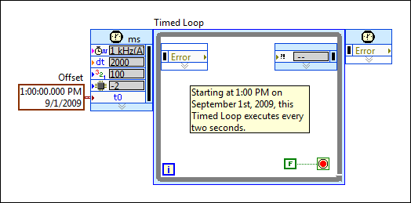

You can synchronize the start of timed structures running on a single computing device or on multiple distributed computing devices connected over Ethernet.
If you are using I/O variables to access I/O data inside of the timed structures you plan to synchronize, you can synchronize timed structures to the NI Scan Engine.
If you are not using I/O variables to access I/O inside of the timed structures you plan to synchronize, use the Synchronize Timed Structure Starts VI to synchronize the start of timed structures running on a single computing device. For example, if you have two timed structures on the block diagram, you can ensure that they execute on the same schedule relative to each other. You can configure the first timed structure to execute first and generate data. You then can configure the second timed structure to process that data when an iteration of the first structure finishes. You can synchronize the start of the timed structures to ensure that both structures use the same start time as the basis for their execution.
|
Note��National Instruments recommends that you use the Synchronize Timed Structure Starts VI only with timed structures configured to use either the 1 kHz Clock timing source or the 1 MHz Clock timing source. National Instruments does not recommend using this VI with absolute time timing sources, reset at structure start timing sources, the Synchronize to Scan Engine timing source, or any external timing source. |
You can create synchronization groups to specify the structures on the block diagram that you want to synchronize. You can create a synchronization group by wiring a name for the group to the synchronization group name input and wiring an array of the timed structure names to the timed structure names input of the Synchronize Timed Structure Starts VI. The synchronization groups you create remain active until the VI completes execution.
The Synchronize Timed Structure Starts VI in the following block diagram creates a synchronization group and synchronizes two Timed Loops, Normal and Delay, to use the same start time.
A timed structure cannot belong to more than one synchronization group. If you attempt to add a timed structure that already belongs to a previous group to a new synchronization group , LabVIEW removes the structure from the previous group and adds it to the new group. You can set the replace (T) input of the Synchronize Timed Structure Starts VI to FALSE to prevent the movement of a timed structure to the synchronization group if the structure already belongs to another synchronization group. If you set the replace (T) input to FALSE and then attempt to include a timed structure already included in another synchronization group, LabVIEW returns an error.
If you are using I/O variables, you can synchronize timed structures to the NI Scan Engine on each device that supports the NI Scan Engine. Because each instance of the NI Scan Engine starts executing at an absolute time that is a multiple of the scan period you configure, you can synchronize the phases of timed structures on multiple targets by setting the scan period on each target to a common value or a multiple of a common value.
If you are not using I/O variables, use absolute time timing sources to synchronize the start of timed structures running on one or more distributed computing devices connected over Ethernet. When you select either 1 kHz <absolute time> or 1 MHz <absolute time> as the timing source of a timed structure, you can specify the exact date and time to start the structure by wiring a LabVIEW timestamp control or constant to the Offset input of the timed structure. By wiring the same timestamp value to multiple timed structures, you can synchronize the start time of the structures.
The Timed Loop in the following block diagram uses the 1 KHz <absolute time> timing source with an Offset configured to start at 1:00 p.m. on September 1, 2009 and a period configured to execute every two seconds.

|
Note��Both the NI Scan Engine and the absolute time timing sources rely on the system clock of the computing device on which the timed structure runs. Therefore, the precision to which you can synchronize timed structures depends on the degree of synchronization of the system clocks themselves. You might be able to improve clock synchronization by setting the system clock of each device to a common master clock. Refer to the National Instruments Web site for information about NI time synchronization software based on the IEEE 1588 specification. |